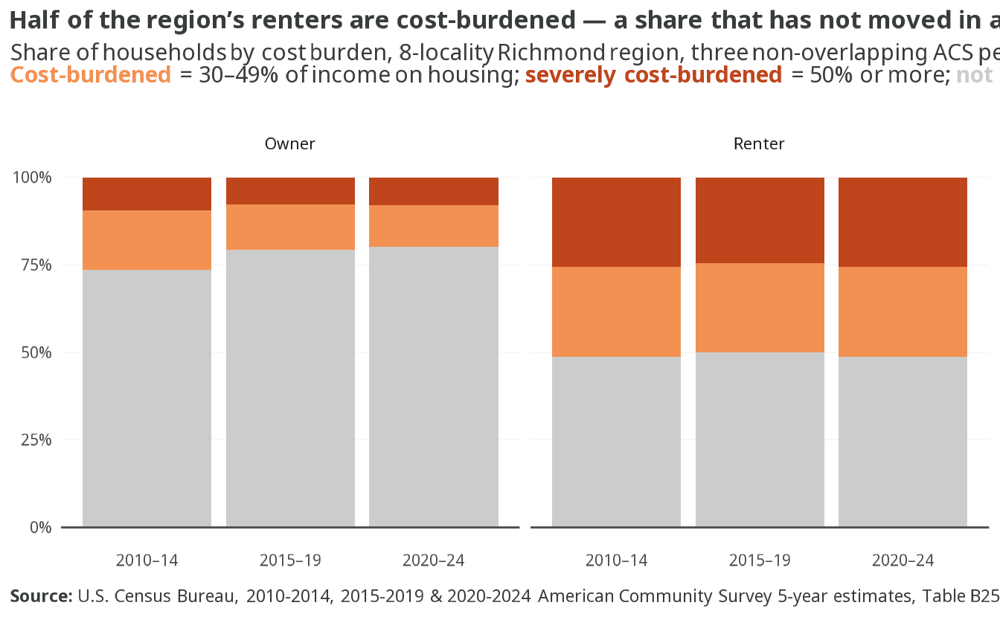
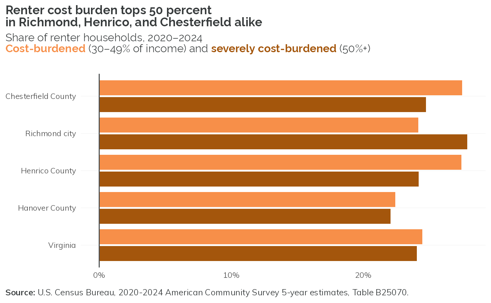
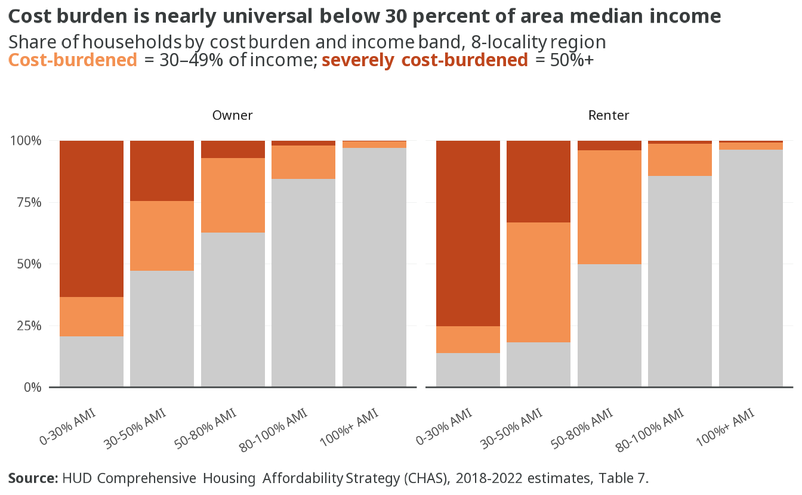
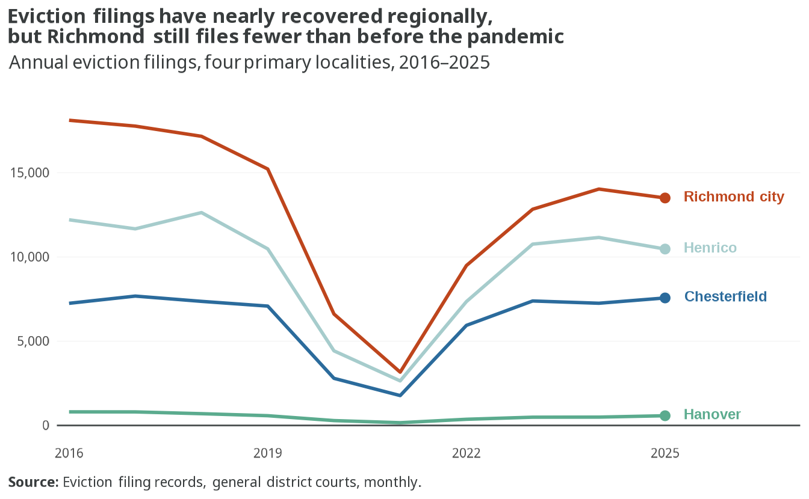
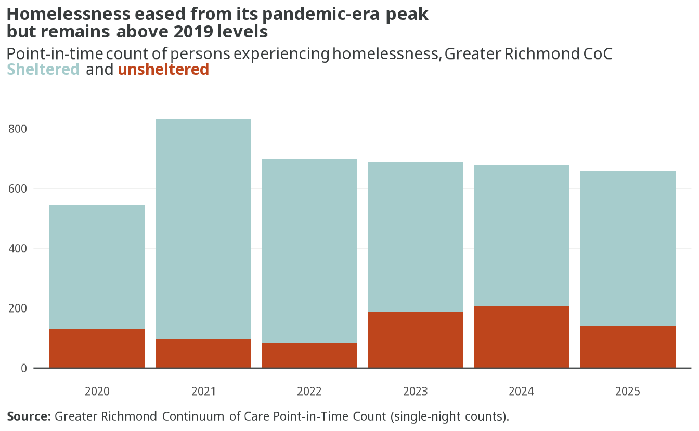
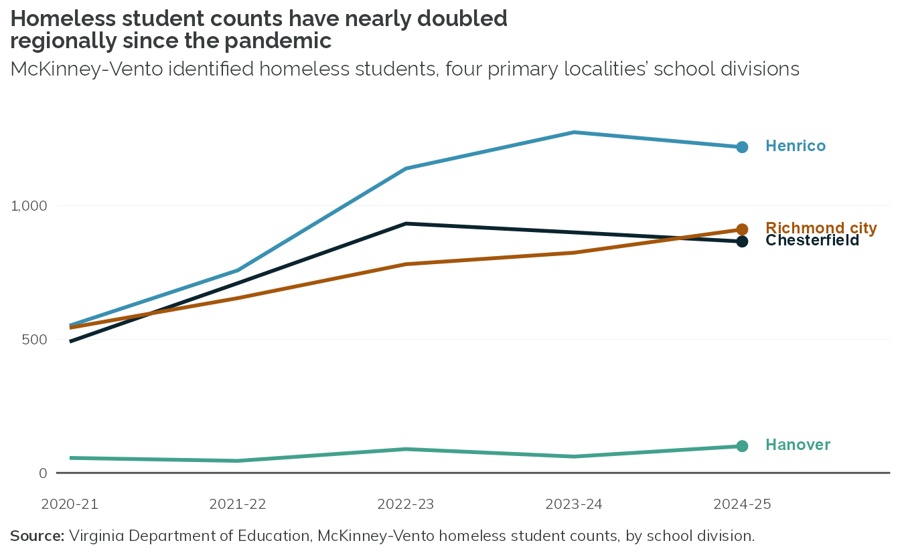

5 Cost burden and instability
5.1 Renter cost burden is climbing again since 2019
- Renter cost burden eased to 50% by 2015–19 but has since climbed back to 52% in 2020–24 — a 1% increase in just five years.
- Severe burden drives the recent rise: severely cost-burdened renters grew from 24.5 percent of all renters in 2015–19 to 26% in 2020–24.
- Owners kept moving the opposite direction: the burdened owner share fell from 21% in 2015–19 to 20% in 2020–24, continuing a decade-long decline from 26 percent in 2010–14.
- Because the renter population grew while the burdened share rose, the count of cost-burdened renter households climbed from 65,366 in 2015–19 to 72,649 in 2020–24 — a faster five-year rise than the change across the full prior decade.
ImportantSince 2022
The 2022 Framework reported cost-burdened renters up by almost 1,900 households and cost-burdened owners down by more than 7,200 since 2015 (Fig 10.1). This update finds the same split, larger on the renter side: burdened renter households up 10,560 (+17.0%) and burdened owner households down 6,843 (-11.0%) from 2010–2014 to 2020–2024. Caveat: the 2022 figures rode on the 2016–2020 ACS with a 2015 base year; this update compares non-overlapping 2010–2014 and 2020–2024 windows, so the magnitudes are directionally comparable but not measured on the same yardstick.
5.2 Renter cost burden tops 50 percent in Richmond, Henrico, and Chesterfield alike

- Total renter cost burden is nearly uniform across the three largest localities: 52 percent in Chesterfield, 52 percent in Richmond, and 52 percent in Henrico — this is a regional condition, not a city problem.
- Richmond has the largest severe tilt: 28 percent of city renters pay half or more of their income toward housing, against 24 percent in Henrico and 25 percent in Chesterfield.
- Hanover is the outlier at 45 percent total renter burden, still well above the owner rate anywhere in the region.
- The three largest localities all exceed the statewide renter burden rate of 49 percent; Hanover sits below it.
5.3 Cost burden is nearly universal below 30 percent of area median income

- NA of renters and NA of owners below 30 percent of area median income are cost-burdened, and most of them severely: NA of renters and NA of owners in this band pay half or more of income toward housing.
- Burden falls sharply as income rises: by 50-80% AMI, NA of renters and NA of owners are burdened; above 100% AMI, fewer than NA of renters and NA of owners are.
- Renters are more burdened than owners at every income band below 100% AMI, widest at the bottom of the scale.
- These are regional totals for the four primary localities.
5.4 Severe burden is rising in the counties, easing in Richmond

- Severe renter burden jumped in every primary locality except Richmond between 2015–19 and 2020–24: Chesterfield rose 4.2 points to 25 percent, Hanover rose 2.7 points to 22 percent, and Henrico rose 1.9 points to 24 percent.
- Richmond moved the other way, easing from 30 percent in 2015–19 to 28 percent in 2020–24 — even as it still carries the region’s largest severe-burden caseload, about 15,800 renter households.
- All four localities had dipped in 2015–19 before this recent runup, so the full-decade change looks smaller than the last five years alone.
- Chesterfield added the most severely burdened renter households of any locality since 2015–19 — up about 1,600 (from 5,962 to 7,599), a 27 percent increase in five years.
5.5 Eviction filings have nearly recovered regionally, but Richmond still files fewer than before the pandemic

- Regional filings fell 77% from 33,345 in 2019 to 7,739 at the 2021 pandemic-era low, then rebounded to 32,098 by 2025 — within 4% of the pre-pandemic total.
- The recovery is uneven by locality: Chesterfield filings now exceed 2019, up from 7,080 to 7,564, while Richmond remains below 2019, down from 15,211 to 13,493.
- Henrico and Hanover filings are both within 1 percent of their 2019 totals.
ImportantSince 2022
The 2022 Framework reported Richmond’s average annual filings down 14 percent by 2017–2019, a pre-pandemic decline. This update finds filings fell much further through the pandemic before rebounding; Richmond’s 2025 total remains 11% below 2019.
5.6 Homelessness eased from its pandemic-era peak but remains above 2019 levels

- The point-in-time count fell to 659 in 2025, down 21% from the 2021 peak of 834, but still 33% above the 2019 count of 497.
- Unsheltered homelessness trended upward even as the total eased, peaking at 206 persons in 2024.
- Sheltered persons made up the large majority of the count in every year, ranging from about 70 to 88 percent of the total.
ImportantSince 2022
The 2022 Framework flagged the COVID-era jump in the point-in-time count from 497 in 2019 to 834 in 2021 (+68 percent). This update finds the count has since eased but not returned to baseline: 659 in 2025 remains 33% above 2019.
5.7 Homeless student counts have nearly doubled regionally since the pandemic

- Henrico’s count more than doubled, from 551 in 2020-21 to 1,219 in 2024-25 (+121%), the largest increase in the region.
- Richmond’s count rose 68% over the same span, from 543 to 911 students.
- Regional totals rose from 1,641 to 3,096 identified homeless students — a 89% increase in five school years.
- Hanover remains the smallest count in the region at 100 students in 2024-25, though it grew at a similar rate to Chesterfield and Richmond.
ImportantSince 2022
The 2022 Framework found Richmond Public Schools’ homeless student count had fallen 40 percent from 2017-18 to 2019-20, a pre-pandemic decline. This update finds the opposite direction since the pandemic: Richmond’s count climbed 68% from 2020-21 to 2024-25, reaching 911 students. Caveat: the two periods are not directly comparable — the 2022 figure covers a pre-pandemic two-year window, while this update covers five post-pandemic school years.
5.8 Planned content
NotePlanned content
Cost burden by race and ethnicity (CHAS). HUD’s CHAS tables will further break burden down by race and ethnicity, complementing the income-band cut above.